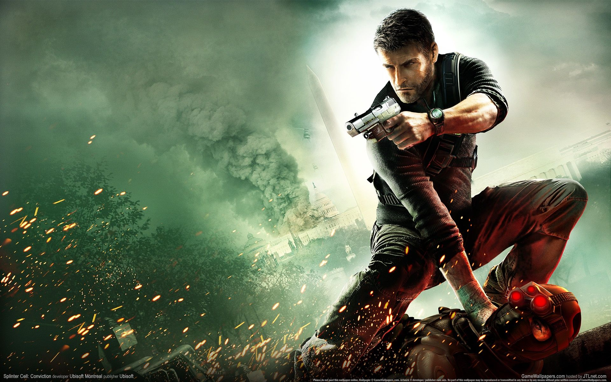
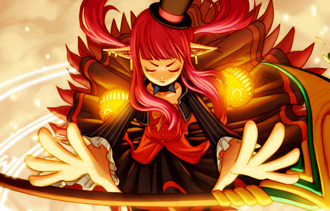
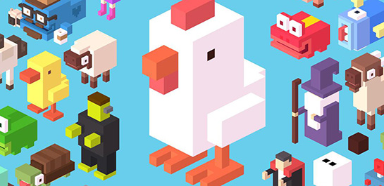
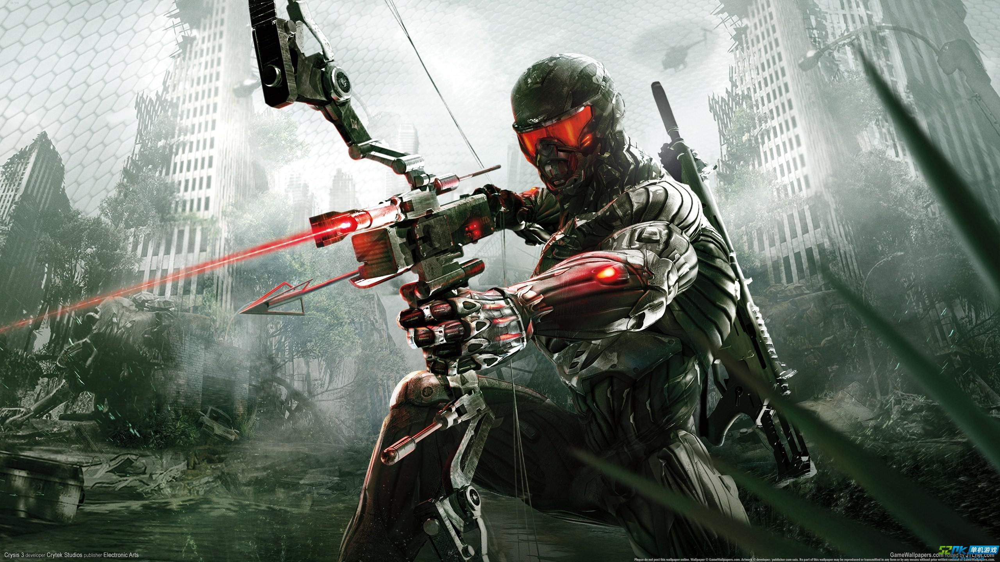

<!--
  Generated template for the SyrTeacherrulePage page.

  See http://ionicframework.com/docs/components/#navigation for more info on
  Ionic pages and navigation.
-->
<ion-header text-center no-border>
  <ion-navbar color="hl">
    <button ion-button icon-only menuToggle>
      <ion-icon name="menu"></ion-icon>
    </button>
    <ion-title style="margin-right:55px;">
      为你推荐
    </ion-title>
  </ion-navbar>
</ion-header>
<ion-content fullscreen> 
    <ion-card>
      
      <ion-card-header>
        <!-- <ion-card-subtitle>Destination</ion-card-subtitle> -->
        <ion-card-title style="font-size:20px;">战场运动</ion-card-title>
      </ion-card-header>
      <ion-card-content>
        游戏背景发生在战场上，英勇的士兵肩负责任，开启了战场运动的征程......
      </ion-card-content>
    </ion-card>
    <ion-card>
        
        <ion-card-header>
          <!-- <ion-card-subtitle>Destination</ion-card-subtitle> -->
          <ion-card-title style="font-size:20px">红少年的运动生活</ion-card-title>
        </ion-card-header>
        <ion-card-content>
          游戏的主人公是擅长魔法红少年，他的运动生活中会是怎样的呢？快来体验吧！
        </ion-card-content>
      </ion-card>
      <ion-card>
          
          <ion-card-header>
            <!-- <ion-card-subtitle>Destination</ion-card-subtitle> -->
            <ion-card-title style="font-size:20px">运动的动物</ion-card-title>
          </ion-card-header>
          <ion-card-content>
            此游戏是益智类游戏，你的运动可以改变动物们的命运哦，快来和可爱的动物们一起玩耍吧！
          </ion-card-content>
        </ion-card>
        <ion-card>
            
            <ion-card-header>
              <!-- <ion-card-subtitle>Destination</ion-card-subtitle> -->
              <ion-card-title style="font-size:20px">危机时刻</ion-card-title>
            </ion-card-header>
            <ion-card-content>
              加快你的步伐，你会冲破危机的束缚！
            </ion-card-content>
          </ion-card>
</ion-content>
